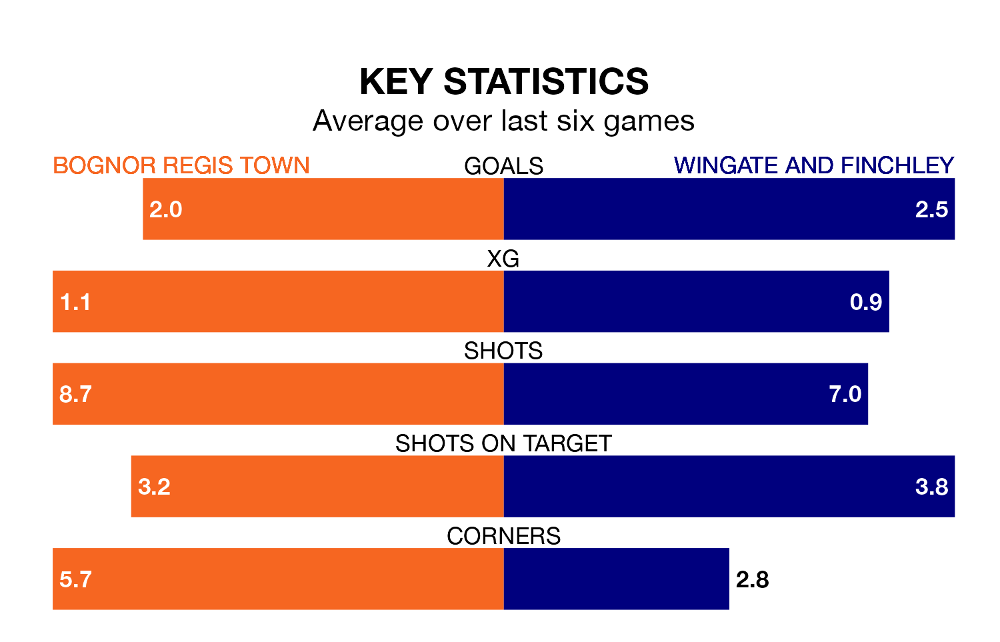

Bognor Regis Town host Wingate and Finchley at Nyewood Lane on late Tuesday on the back of three consecutive wins in Isthmian Premier Division.
Bognor Regis have picked up 13 points from their last six games, and they face a Blues side who also won their last match, and have collected the same number of points from the last possible 18.
With 48 goals in 24 games so far this season, Wingate & Finchley are the league's joint-second-highest scorers with 2.0 goals per game. But they are conceding more than average too, letting in 43 goals at a rate of 1.8 per game.
Bognor Regis are also above average scorers, with 1.7 goals per game, compared to a league average of 1.6. They have conceded 1.5 goals per game.
In the last 10 years, Bognor Regis and Wingate & Finchley have played each other on 15 occasions. Bognor Regis won 11 of them, Wingate & Finchley three, and they drew once.
On average, Bognor Regis scored 2.6 goals and the Blues 1.3 in those matches.
Their last meeting was on February 25, when Wingate & Finchley won 4-2 at home.
The Blues are fourth in the table after 24 games, of which they have won 14 and drawn two, earning 44 points.
Town are four places behind the away side in eighth, with nine wins and nine draws putting them on 36 points.
Bognor Regis's last match was on Saturday, a 5-4 win against Hashtag United.
Wingate & Finchley beat Whitehawk 5-1 last time out, also on Saturday.
Updated: 14:53 (UTC), 16/01/24